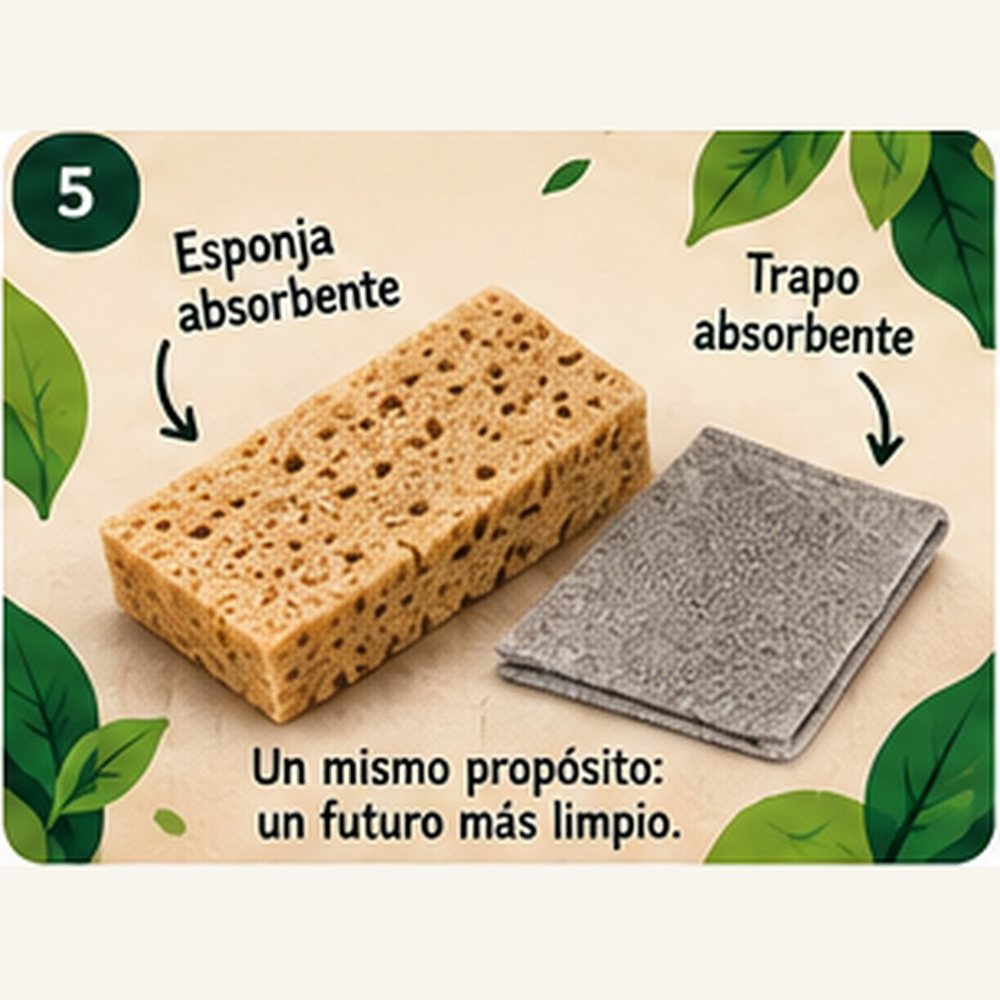
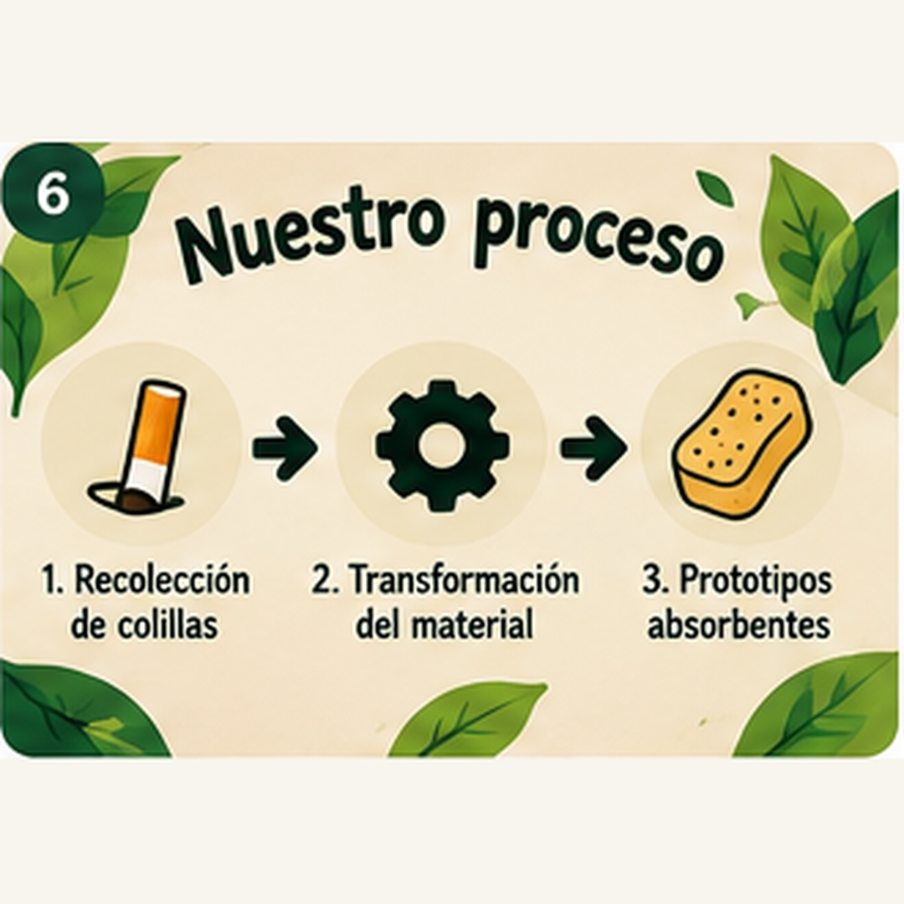
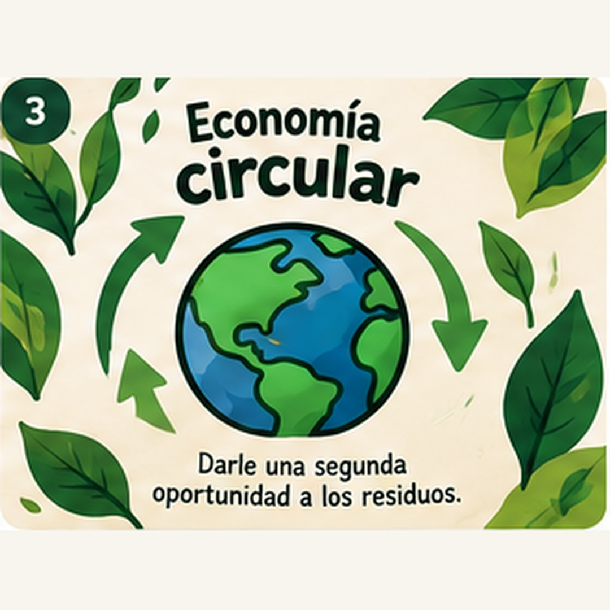

Esponja ReColilla
Absorbe aceite y grasa en pequeños derrames. Se vende por unidad.
$10.146COP / unidad
Recolectamos filtros de cigarrillo, los limpiamos y los convertimos en esponjas y trapos que absorben aceite y grasa. Un residuo contaminante pasa a ser un producto útil.
El problema
Las colillas son de los desechos más comunes del planeta. Casi nunca tienen un lugar donde dejarlas, así que terminan en la calle, en las alcantarillas y en el agua.
Un solo filtro puede contaminar hasta 50 litros de agua.
El filtro tarda entre uno y diez años en descomponerse.
Faltan puntos de recolección específicos, por eso llegan a calles y fuentes hídricas.
Talleres, cocinas y hogares limpian el aceite con papel, trapos comunes o químicos costosos.
Nuestra solución
El filtro del cigarrillo está hecho de acetato de celulosa, un material que repele el agua y atrae las grasas y los hidrocarburos. Esa propiedad lo hace útil para limpiar derrames de aceite.
ReColilla resuelve dos problemas con un mismo ciclo: saca las colillas del ambiente y ofrece una alternativa a los absorbentes de un solo uso hechos de plástico derivado del petróleo.
Por qué importa
ReColilla se basa en la economía circular: un material que se descartaría vuelve a usarse.
Reduce los filtros que llegan a calles y fuentes hídricas.
Disminuye el uso de absorbentes desechables derivados del petróleo.
Los puntos de recolección sensibilizan a cafés, bares y comunidad.
Genera ingresos para el emprendimiento y para los puntos aliados.
Productos
Tres presentaciones para talleres, restaurantes y hogares.

Absorbe aceite y grasa en pequeños derrames. Se vende por unidad.

Para superficies, herramientas y derrames más amplios. Se vende por unidad.

Una esponja y un trapo, a un precio menor que comprarlos por separado.
Precios académicos propuestos. Descuento para compras de 10 o más unidades.
El proceso
Cada etapa se hace con elementos de bioseguridad, porque el material se manipula como residuo.
Contenedores especiales en cafés, bares y otros puntos aliados.
Dividimos papel, tabaco residual y filtro.
Lavamos y desinfectamos el filtro de acetato de celulosa.
Secamos la fibra y la preparamos como material absorbente.
Compactamos el material en forma de esponja o trapo.
Etiquetamos y explicamos su origen reciclado.
Qué nos hace distintos
Para quién y cómo llegamos
Ruta del proyecto
Ocho etapas para llegar a un producto terminado, probado y listo para exponer.
Idea del producto, roles del equipo y materiales.
Colillas para pruebas y primeros puntos aliados.
Filtros separados, limpios y desinfectados.
Acetato de celulosa listo como absorbente.
Primeras esponjas y trapos moldeados.
Absorción de aceite y grasa y mejoras.
Versión definitiva, empaque y presentación.
Demostración del funcionamiento.
Quiénes somos
Estudiantes de la Fundación Universitaria Monserrate (sede Mosquera), en la asignatura Formulación y Evaluación de Proyectos.
Si tienes un café, un bar, un taller o un restaurante, escríbenos. Te contamos cómo recolectar colillas o probar nuestros productos.